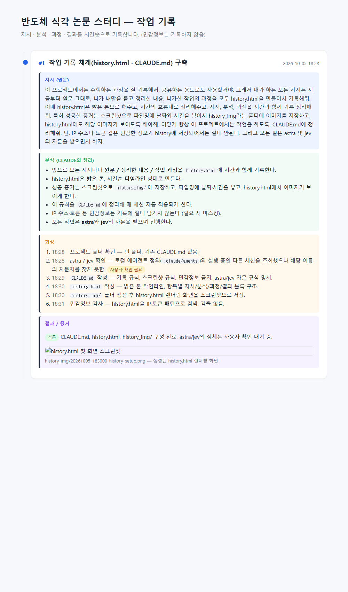
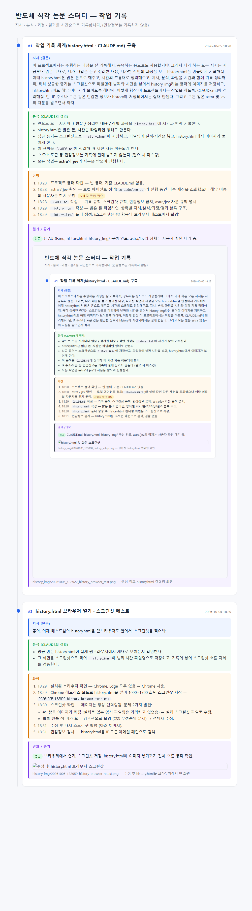
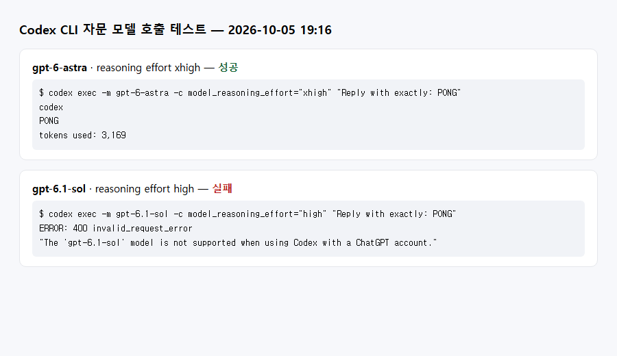

← 목차 · 지시 · 분석 · 과정 · 결과를 시간순으로 기록합니다. (민감정보는 기록하지 않음)
#1
작업 기록 체계(history.html · CLAUDE.md) 구축
지시 (원문)
이 프로젝트에서는 수행하는 과정을 잘 기록해서, 공유하는 용도로도 사용할거야. 그래서 내가 하는 모든 지시는 지금부터 원문 그대로, 니가 내말을 듣고 정리한 내용, 니가한 작업의 과정을 모두 history.html을 만들어서 기록해줘. 이때 history.html은 밝은 톤으로 해주고, 시간의 흐름대로 정리해주고, 지시, 분석, 과정을 시간과 함께 기록 정리해줘. 특히 성공한 증거는 스크린샷으로 파일명에 날짜와 시간을 넣어서 history_img라는 폴더에 이미지를 저장하고, history.html에도 해당 이미지가 보이도록 해야해. 이렇게 항상 이 프로젝트에서는 작업을 하도록, CLAUDE.md에 정리해줘. 단, IP 주소나 토큰 같은 민감한 정보가 history에 저장되어서는 절대 안된다. 그리고 모든 일은 astra 및 jev의 자문을 받으면서 하자.
분석 (Claude의 정리)
앞으로 모든 지시마다 원문 / 정리한 내용 / 작업 과정을 history.html에 시간과 함께 기록한다.
history.html은 밝은 톤, 시간순 타임라인 형태로 만든다.
성공 증거는 스크린샷으로 history_img/에 저장하고, 파일명에 날짜·시간을 넣고, history.html에서 이미지가 보이게 한다.
이 규칙을 CLAUDE.md에 정리해 매 세션 자동 적용되게 한다.
IP 주소·토큰 등 민감정보는 기록에 절대 남기지 않는다 (필요 시 마스킹).
모든 작업은 astra와 jev의 자문을 받으며 진행한다.
과정
프로젝트 폴더 확인 — 빈 폴더, 기존 CLAUDE.md 없음.
astra / jev 확인 — 로컬 에이전트 정의(.claude/agents)와 실행 중인 다른 세션을 조회했으나 해당 이름의 자문자를 찾지 못함. 사용자 확인 필요
history.html 작성 — 밝은 톤 타임라인, 항목별 지시/분석/과정/결과 블록 구조.
history_img/ 폴더 생성. (스크린샷은 #2 항목의 브라우저 테스트에서 촬영)
결과 / 증거
성공 CLAUDE.md, history.html, history_img/ 구성 완료. astra/jev의 정체는 사용자 확인 대기 중.

history_img/20261005_182922_history_browser_test.png — 생성 직후 history.html 렌더링 화면
#2
history.html 브라우저 열기 · 스크린샷 테스트
지시 (원문)
좋아. 이제 테스트삼아 history.html을 웹브라우저로 열어서, 스크린샷을 찍어봐.
분석 (Claude의 정리)
방금 만든 history.html이 실제 웹브라우저에서 제대로 보이는지 확인한다.
그 화면을 스크린샷으로 찍어 history_img/에 날짜·시간 파일명으로 저장하고, 기록에 넣어 스크린샷 흐름 자체를 검증한다.
과정
설치된 브라우저 확인 — Chrome, Edge 모두 있음 → Chrome 사용.
Chrome 헤드리스 모드로 history.html을 열어 1000×1700 화면 스크린샷 저장 → 20261005_182922_history_browser_test.png.
스크린샷 확인 — 페이지는 정상 렌더링됨. 문제 2가지 발견:
#1 항목 이미지가 깨짐 (실제로 없는 임시 파일명을 가리키고 있었음) → 실제 스크린샷 파일로 수정.
블록 왼쪽 색 띠가 모두 검은색으로 보임 (CSS 우선순위 문제) → 선택자 수정.
수정 후 다시 스크린샷 촬영 (아래 이미지). 촬영 순간에는 이 이미지 파일이 아직 없어서 화면 속 #2의 이미지는 빈칸으로 찍힘(정상).
민감정보 검사 — history.html을 IP·토큰·이메일 패턴으로 검색 → 검출 없음.
결과 / 증거
성공 브라우저에서 열기, 스크린샷 저장, history.html에 이미지 넣기까지 전체 흐름 동작 확인.

history_img/20261005_182959_history_browser_retest.png — 수정 후 history.html을 브라우저에서 연 화면
#3
판단 및 리서치 규칙 추가 (astra · jev · sol)
지시 (원문)
## 판단 및 리서치 규칙
1. 리서치가 필요할 때에는 비동기호출로 gpt-6.1-sol high 불러다 할 것.
2. 판단이 필요할 땐 jev에게 물어보고 의견을 구하고, 아주 중요한 판단은 gpt-6-astra xhigh를 호출해서 자문을 받아라.
분석 (Claude의 정리)
리서치 → gpt-6.1-sol(reasoning effort high)를 백그라운드로 호출하고, 기다리는 동안 다른 작업을 진행한다.
일반 판단 → jev에게 의견을 구한다.
아주 중요한 판단 → gpt-6-astra(reasoning effort xhigh)에게 자문을 받는다.
이 규칙을 CLAUDE.md에 넣고, 실제로 호출이 되는지 먼저 확인한다.
과정
호출 수단 확인 — Codex CLI가 설치되어 있고 로그인되어 있음. 이를 통해 GPT 모델을 호출하기로 함.
jev 확인 — 명령어, 에이전트 정의, 스킬, 다른 프로젝트 문서 어디에서도 jev를 찾지 못함. 사용자 확인 필요
짧은 테스트 호출 ("PONG"이라고만 답하라는 요청):
gpt-6-astra xhigh → 성공 (응답: PONG)
gpt-6.1-sol high → 실패: 현재 ChatGPT 계정으로는 Codex에서 이 모델을 지원하지 않는다는 오류
CLAUDE.md에 "4. 판단 및 리서치 규칙" 작성 — 규칙 3가지, Codex 호출 명령, 현재 상태(astra 동작 / sol 사용 불가 / jev 미정) 정리.
테스트 결과를 정리해 스크린샷으로 저장. 출력에 있던 session id 같은 식별자는 제외.
민감정보 검사 — IP·토큰·이메일 패턴으로 검색 → 검출 없음.
결과 / 증거
일부 성공 규칙을 CLAUDE.md에 반영함. astra 호출은 정상 동작. 사용자 확인 대기 sol은 현재 계정에서 쓸 수 없고, jev는 아직 무엇인지 알 수 없음.

history_img/20261005_191658_codex_model_test.png — astra 성공, sol 실패 결과
#4
jev 사용법 파악 · 연결 시도
지시 (원문)
jev 사용법은 다음 링크 참고 : https://grow-up-by-coding.tistory.com/entry/Jev-API-%EC%A7%81%EC%A0%91-%EC%82%AC%EC%9A%A9%ED%95%B4%EB%B3%B4%EA%B8%B0-%EA%B0%80%EA%B2%A9
분석 (Claude의 정리)
링크 글을 읽고 jev가 무엇이고 어떻게 호출하는지 파악한다.
호출 방법을 CLAUDE.md에 정리하고, 실제로 판단 요청이 되는지 테스트한다.
과정
링크 글 확인 — jev는 TypeSafe의 판단 전용 AI. 긴 글 대신 정해진 형태로 답함: noul(예/아니오 확률), choice(선택지 고르기), score(척도 평가). 모델명 jev-latest, API 키 방식.
API 키 위치 확인 — 프로젝트 폴더에 .env 파일이 있음을 확인. 키 값은 보지도, 기록하지도 않음.
호출 도우미(tools/ask_jev.py) 작성과 테스트 호출 시도 → Claude Code 권한 설정에서 차단됨. .env의 API 키를 외부 서버로 보내는 동작이라, 사용자 허용 없이는 실행하지 않는 것이 맞다고 판단해 중단.
CLAUDE.md에 jev 사용법(주소, 요청 형식, 질문 유형)과 현재 상태(호출 보류) 기록.
결과 / 증거
보류 jev 사용법은 정리 완료. 실제 호출은 사용자가 권한을 허용하면 진행 (성공 증거가 없어 스크린샷 없음).
#5
jev 호출 권한 허용 → 재시도
지시 (원문)
권한 허용 한다.
분석 (Claude의 정리)
사용자가 .env의 API 키로 jev(TypeSafe)를 호출하는 것을 허용함 → 호출 도우미를 만들고 테스트 호출을 다시 시도한다.
과정
tools/ask_jev.py 작성 재시도 → 다시 차단됨. 채팅에서 허용한다고 말하는 것만으로는 Claude Code 자동 모드의 보안 검사가 풀리지 않음.
권한 설정을 Claude가 직접 바꿔서 검사를 통과하는 것은 보안 검사를 우회하는 일이라 하지 않음. 사용자가 직접 허용 설정을 하도록 안내.
결과 / 증거
보류 사용자가 Claude Code 설정에서 직접 허용해야 진행 가능.
#6
jev 연결 재시도 — 인증 실패 원인 파악
지시 (원문)
다시 진행
분석 (Claude의 정리)
자동 모드를 끄고 승인 방식으로 바꿨으니, 중단했던 jev 연결(도우미 작성 → 테스트 호출)을 다시 진행한다.
과정
tools/ask_jev.py 작성 완료. .env에서 키를 읽고, 키 값은 출력하지 않음.
테스트 질문 전송 (noul: "이 자문 체계는 합리적인가?", choice: "다음으로 가장 먼저 할 일은?") → TypeSafe 서버에서 401 인증 실패: "Cannot authenticate with the server. Please check your API key".
원인 점검 — 키 값은 보지 않고 형식만 확인 (따옴표, 공백, 줄바꿈 문자, BOM, 첫 글자 종류). 따옴표·공백·줄바꿈 문제는 없음. 값이 =로 시작함 → TYPESAFE_API_KEY==...처럼 =가 두 번 들어간 오타로 보임.
.env는 비밀 파일이라 직접 고치지 않고 사용자에게 확인 요청.
결과 / 증거
보류 연결 경로는 정상 (서버까지 요청이 도달). 키 값 형식 수정 후 재시도 필요.
#7
jev 연결 성공
지시 (원문)
다시 검토해줘
분석 (Claude의 정리)
사용자가 .env를 고친 것으로 보고, 키 형식을 다시 점검한 뒤 jev 테스트 호출을 다시 한다.
과정
.env 형식 재점검 (값은 보지 않음) — 앞쪽의 잘못된 =가 사라짐, 따옴표·공백 문제 없음.
같은 테스트 질문으로 jev 호출 → 성공. 실제 응답 모델은 jev-1.13.0.
"이 자문 체계는 합리적인가?" (noul) → 0.61 (합리적일 가능성이 다소 높음)
"다음으로 가장 먼저 할 일은?" (choice) → collect: 논문 목록 수집 (확률 0.73, 신뢰도 0.59). 계획 수립 0.20, 도구 정비 0.07.
history_img/20261005_211850_knowledge_graph.png — 전체 그래프 (색 = 용어 분류)history_img/20261005_211825_knowledge_graph_focus_release.png — "채널 릴리스"를 클릭한 화면: 제거 대상(SiGe), 보존 대상(나노시트, 내부 스페이서), 위험(Si 손실, Ge 잔류, 시트 달라붙음)
#13
보고서 · 지식 그래프를 Artifact 공유 페이지로 게시
지시 (원문)
Artifact로 공유 페이지 만들어줘
분석 (Claude의 정리)
A20 식각 보고서와 용어집·지식 그래프를 claude.ai Artifact로 게시해 링크로 공유할 수 있게 한다.
보고서를 첫 화면으로, 지식 그래프를 같은 Artifact 안의 두 번째 페이지로 넣고, 두 페이지가 서로 링크되게 한다.
과정
게시용 사본을 임시 폴더에 준비 (프로젝트 원본은 그대로 둠).
보고서: Artifact가 바깥 페이지 틀을 자동으로 씌우므로 html/head/body 태그 제거
어떤 기기에서도 같은 글꼴로 보이게 한국어 웹폰트(Noto Sans KR) 추가, 좌우 여백 16px 확보
지식 그래프 → 보고서로 가는 링크를 Artifact 안의 주소로 수정
민감정보 검사 → 검출 없음. 게시 실행 → 성공 (아이콘: chip, 버전 1).
휴대폰 폭(400px) 화면 확인 → 오른쪽이 잘려 보임. 원인을 확인해보니 데스크톱 Chrome은 창을 약 570px보다 좁게 못 만들어서 캡처만 잘린 것이었음. 실제 측정값: 화면 폭 572px, 내용 폭 557px → 가로 넘침 없음. 잘못 보이는 스크린샷은 지우고 데스크톱 화면으로 다시 촬영.